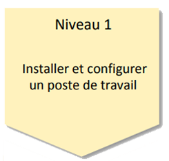

Administrer des systèmes informatiques communicants complexes

- Identifier les différents composants (matériels et logiciels) d’un système numérique
- Utiliser les fonctionnalités de base d’un système multitâches / multiutilisateurs
- Installer et configurer un système d’exploitation et des outils de développement
- Configurer un poste de travail dans un réseau d’entreprise
Evalutation
| Ressource | R1.03 | R1.04 | R1.10 | R1.11 |
|---|---|---|---|---|
| Coeff | 21 | 21 | 12 | 6 |
SAE 1.03 - Installation d'un poste pour le développement
En partant d'un besoin exprimé par un client, il faut identifier les outils les plus adaptés aux besoins, les Installer, les configurer et créer une notice d'utilisation. Cette SAÉ permet d'expérimenter les missions d'Installation de poste de travail.
R1.03
Introduction à l'architecture des ordinateurs
Apprentissages critiques
- Identifier les différents composants d'un système numérique
R1.04
Introduction aux systèmes d'exploitation et à leur fonctionnement
Apprentissages critiques
- Utiliser les fonctionnalités de base d'un système multitâches / multiutilisateurs
- Installer et configurer un système d'exploitation et des outils de développement
R1.10
Anglais technique
Apprentissages critiques
- Identifier les différents composants d'un système numérique
R1.11
Bases de la communication
Apprentissages critiques
- Configurer un poste de travail dans un réseau d'entreprise